-
程序介绍
这个程序命名为“无人机管理与模拟系统(UAV.MAS)”，其英文名为“Unmanned Aerial Vehicle. Management and Analog System”.
-
角色对象功能：
1. 查询无人机信息：包括全部、按名称、按编号、按型号、按状态查询；
2. 更改无人机信息：更改指定编号的无人机的名称、编号、型号、状态等信息；
3. 无人机入岗或退休：包括无人机上岗、退休、入岗、摧毁、仓库清空；
4. 无人机模拟（小游戏）：在10~30大小的正方形二维平面地图中操控无人机到达终点；
5. 系统密码管理（附）：包括更改、关闭、启用系统密码并加密储存；
-
设计亮点：
1. 数据可储存到外部，退出程序不丢失数据；
2. 嵌入了无人机模拟小游戏，在管理之余还能放松一下心情；
3. 嵌入了密码系统，带有加密功能，程序更安全；
4. 带有程序报错及部分错误自动修正功能，降低程序错乱概率；
5. 部分功能操作需反复确认，防止误操作；
6. 部分功能应用了Windows窗口编程实现；
-
效果展示：
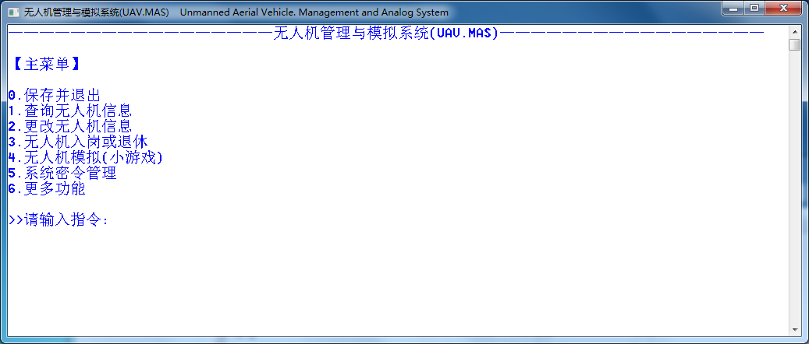
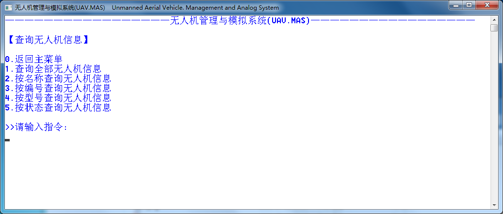
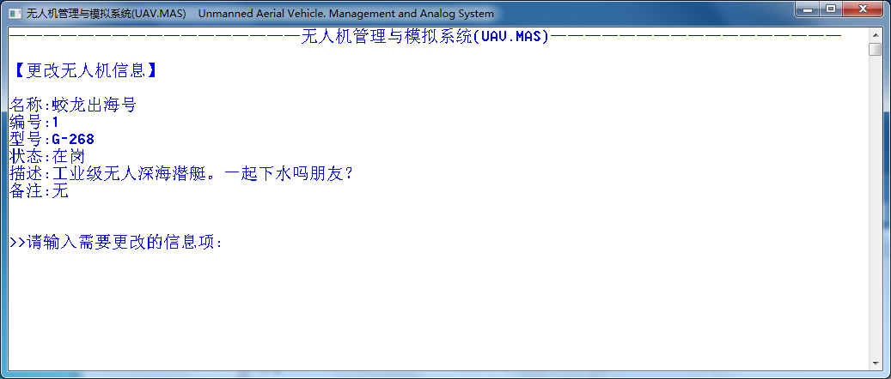
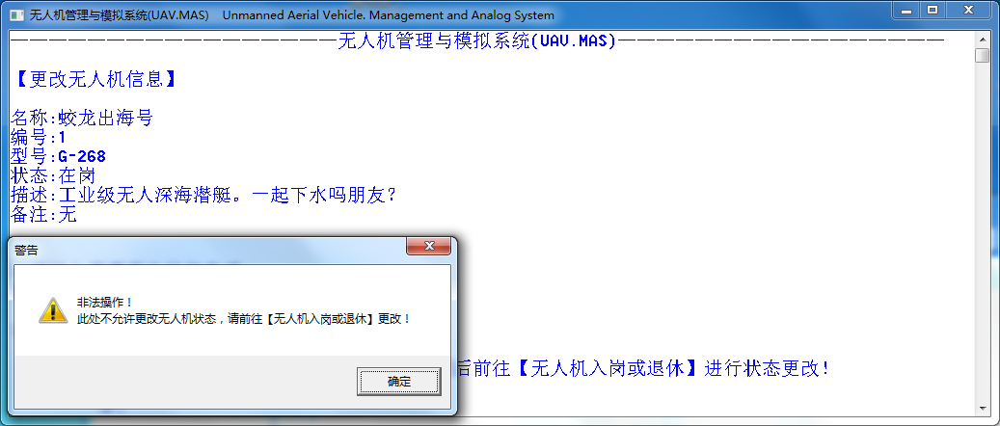
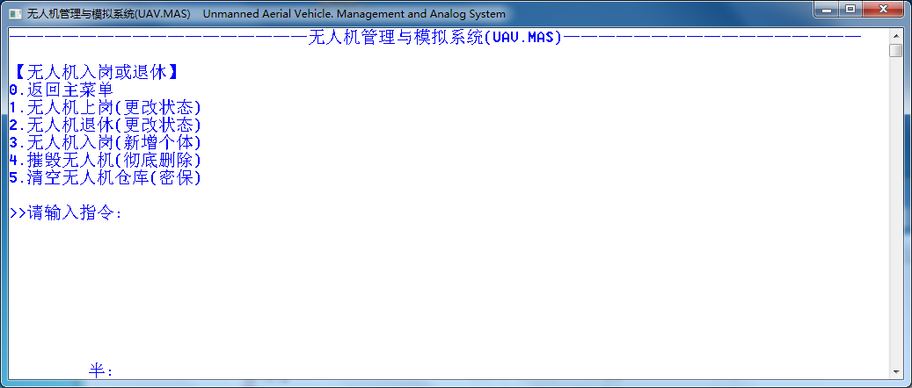
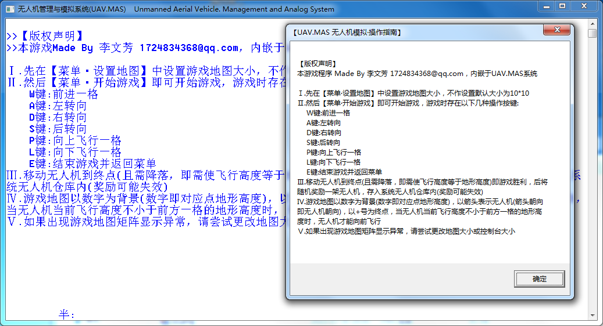
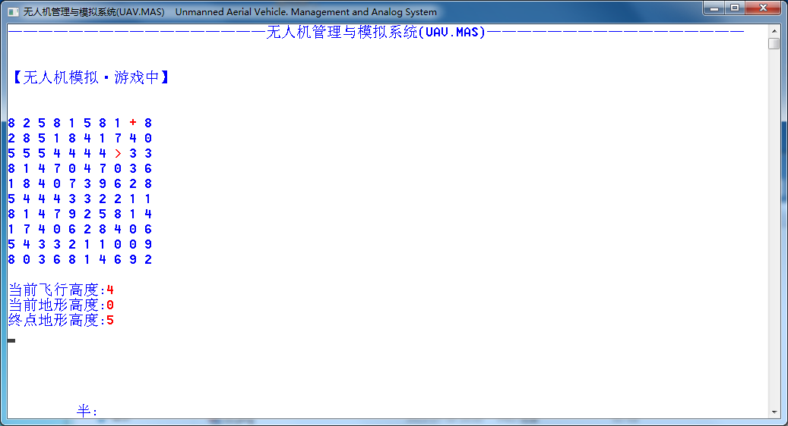
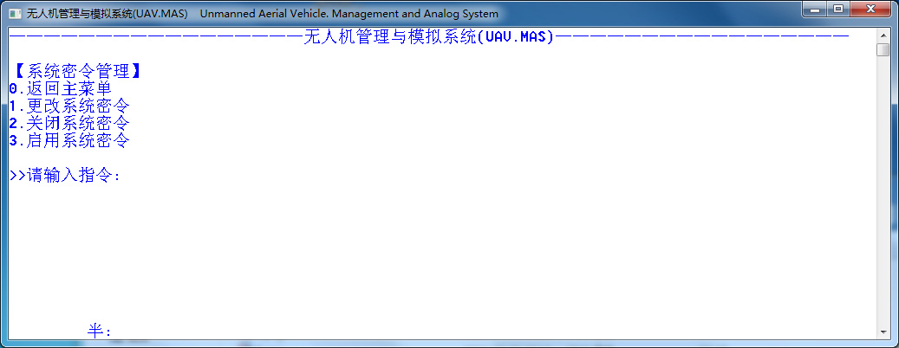

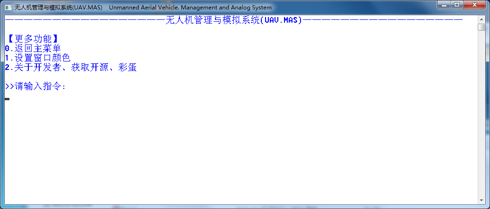
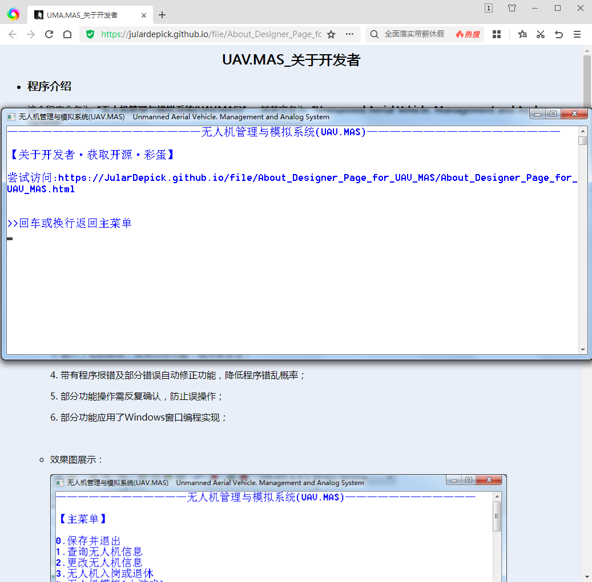
-
坎坷历程：
-
萌生想法：UAV.MAS 的前身是我编写的C.J.K.学员管理系统(CSMS)，当时只是因为社团人有点点多(20个)，突发奇想写个程序来帮助管理好像也不错？(当时我最擅长的是C++，对于MySQL一窍不通，各种想法试了又试)。
-
临兵上阵：我刚写完 CSMS 没多久,我的指导老师跑过来和我说有个比赛，我的程序恰好能派上用场，于是在初赛前几天里我爆肝出了 UAV.MAS_1.0。
-
人祸天灾：初赛前一天晚上，我刚完成 UAV.MAS_1.0 ，还没来得及进一步调试，就在整理文件夹时误删了源代码！我的文件是保存在U盘上的，删除之后并不会出现在“回收站”里，也没有备份，我当时望着空荡荡的“回收站”整个人都傻了。
-
福祸相依：我把误删源代码的事情报告给了老师，老师跑过来又好笑又懊恼，换了好几个数据恢复软件都没成功，前前后后花了几个小时终于从B站上get到了一款免费有效的数据恢复软件，把源代码救了回来（幸好我的盘没装满过，不然复写了神仙也摇头）。我赶紧把这个数据恢复软件收藏起来，生怕下一次用时找不到了。
-
重整旗鼓：恢复回来的 UAV.MAS_1.0 并不完整，典型的掐头去尾式丢失————程序开头部分的无人机类和结尾部分的几个功能函数的代码被截断了，我又花了老长时间才把缺失的部分补全。
-
初试锋芒：初赛答题出了点小状况，不过最终我的程序还是有惊无险地通过了省赛选拔，拿到了国赛资格(庆幸至极)。
-
溃于蚁穴：省赛之后我有近一个月的时间准备国赛，但学校安排了暑期补课，我只能在国赛开始前几天做准备。就在我为程序添砖加瓦时，一个bug损失了我一天的努力。我新增的程序功能“调整控制台窗口”莫名出现了一个致命bug，我找出了出问题的那行代码（将窗口缓冲区宽度与窗口大小对齐），但我无论怎么想都无法理解那一句为什么会出bug（见下图1），最后没办法不得不把原有的功能（见下图2、3、4）阉掉，只保留了其中一部分（见下图5），这让我又浪费了两个小时来删除各种多余代码。太难受了、、、
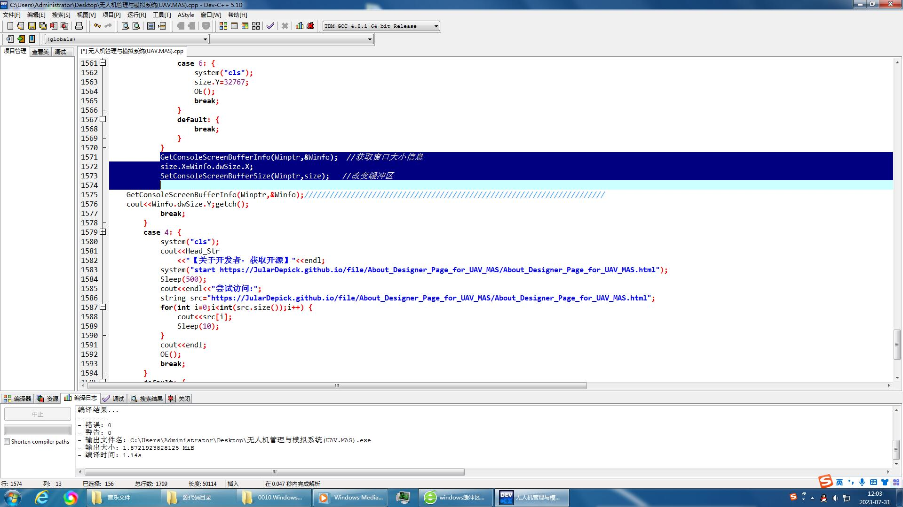
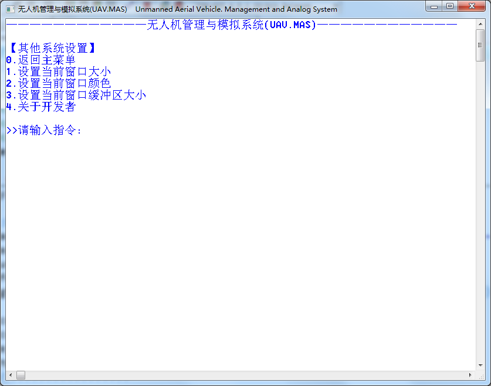
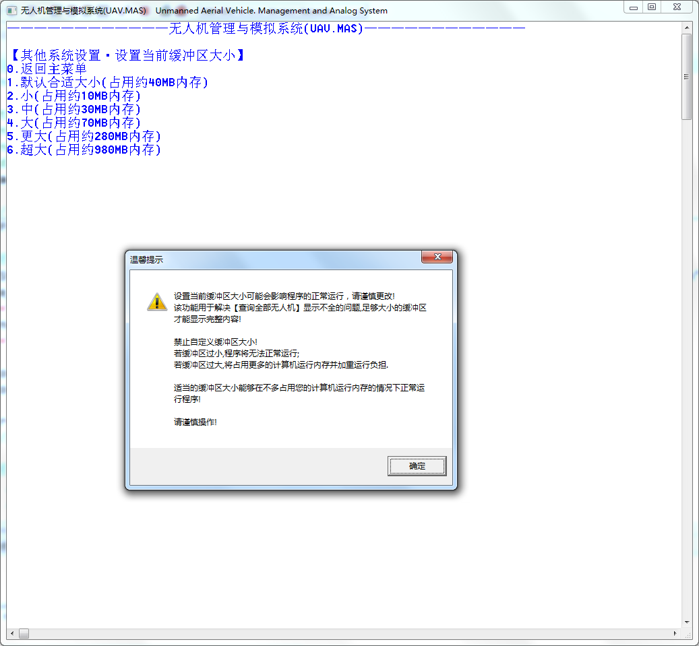
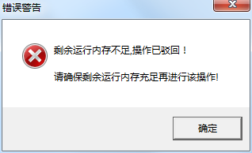
-
一觉清晨：俗话说得好，“一觉醒来是早晨”，无论多么大的苦难和挫折，只要人们常“心向阳光”，总能“自明朗”。而国赛前一晚，我昏昏沉沉地睡去，梦中指令和代码交叠、缠绵、舞蹈，令我难以入睡。醒来时揉揉惺忪的睡眼，一把清凉的清水又带走了我一切的疲惫。整理好所需文件，我坐在电脑前等待国赛开始……
-
未来可期：少年们，青春不是等待奇迹降临，而是主动迎接挑战、抓住机遇、追求卓越、迎难而上，用自己的双手开拓属于自己的一方天地！
努力前行吧，带光的少年！
-
-
版权声明
本人承诺程序作品为原创，无剽窃、抄袭他人成果和其他学术不端行为。 如果你需要本程序代码为你服务，你得联系李文芳获取授权，邮箱为 1724834368@qq.com.
防伪标识码："SnVkZUJsYWNrRGVkaVBlbnNvbk1pbnBlbkp1bGFyRGVwaWNrQ2luaGFuQmFuamFuc0xpV2VuZmFuZD".
-
授权说明
本作品作者授权 第七届全国青少年无人机大赛组委会 合理使用作品申报资料，用以学习交流。包括编印优秀项目汇编或向相关杂志社推荐刊登。
本作品作者授权 元梦星球 无条件使用(包括开源)。
其他人员或组织未经作者本人允许不得非法搬运、抄袭本作品以获利，侵权必究。
作者本人授权签字: 李文芳
-
参赛证明
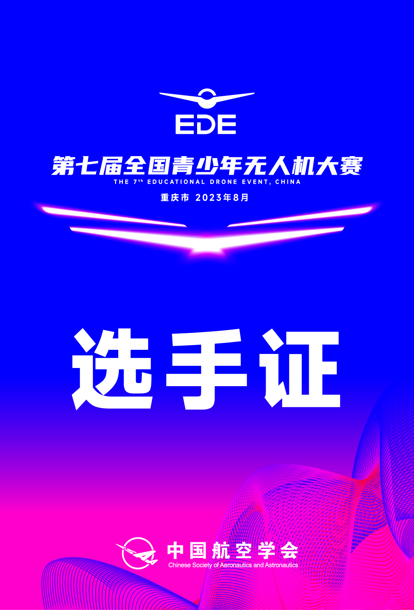 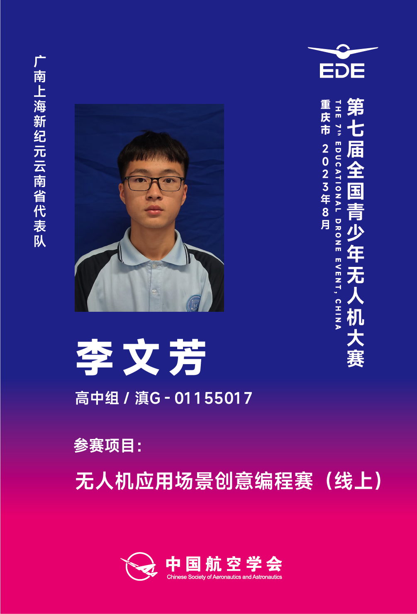 -
获奖证明
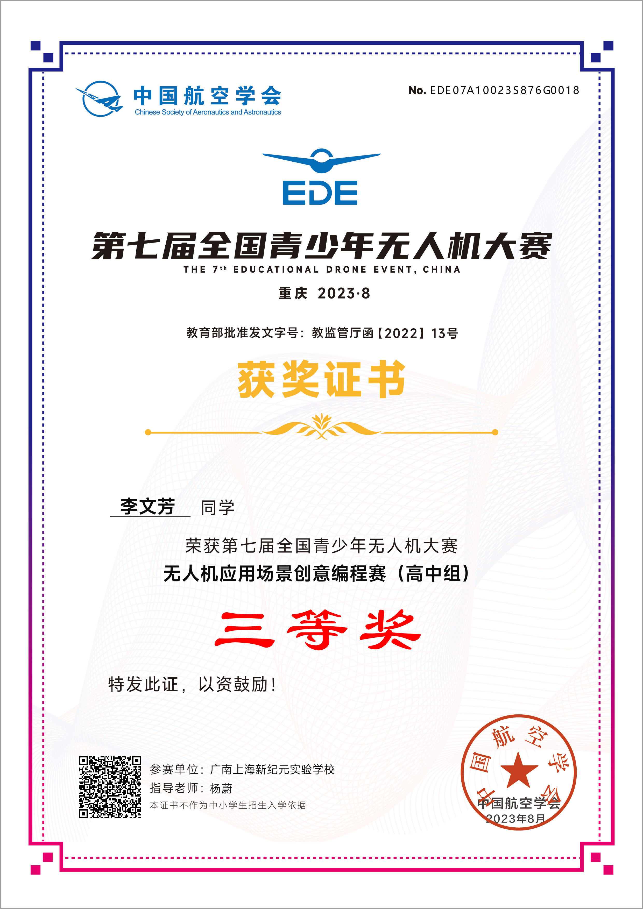 开源信息
源代码帮助文档: https://JularDepick.github.io/Yuameng/Expand/Page/About_Designer_Page_for_UAV_MAS/file/帮助文档.docx